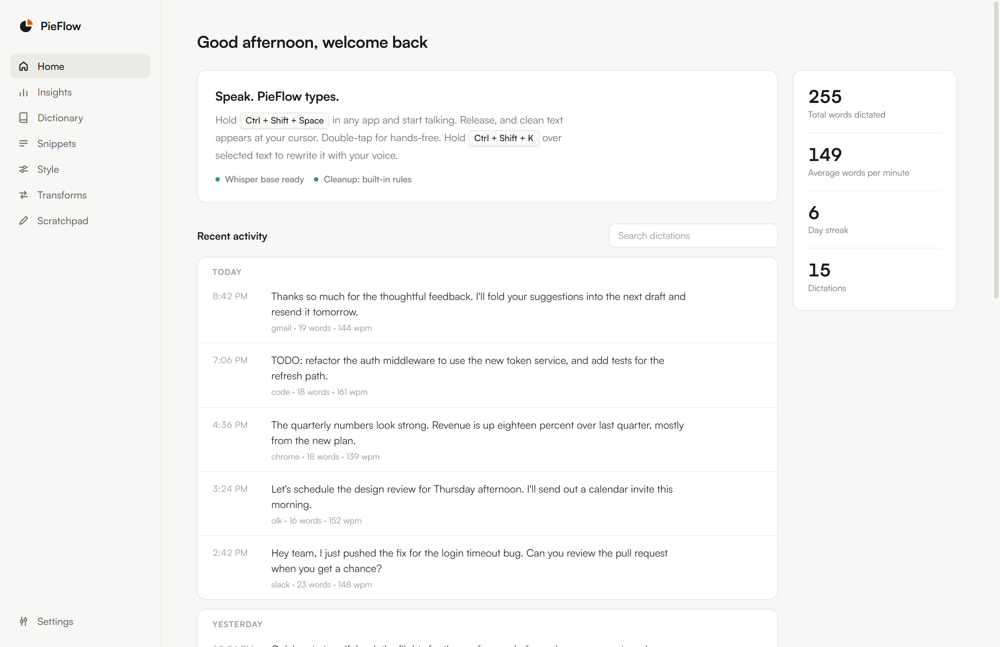

The free Wispr Flow alternative for Windows
Press a hotkey in any app, speak naturally, and PieFlow types clean, punctuated text at your cursor. Local Whisper AI dictation that runs on your machine. No account, no subscription.

Everything you need to talk instead of type
A full voice keyboard for Windows, not just raw transcription.
Push-to-talk or hands-free
Hold the hotkey to dictate, or double-tap for hands-free mode. Works in browsers, email, editors, chat, any text field.
AI cleanup
Removes "um" and "uh", fixes punctuation and capitalization, and resolves spoken self-corrections. Your words, cleaned up, never answered.
Private by default
Local Whisper transcription. No account, no telemetry, no cloud round-trip. Your audio stays on your device.
Personal dictionary
Teach it names, jargon, and product terms so it always spells them right. It learns from your corrections over time.
Snippets & commands
Say a trigger to expand saved text. Select text and speak an instruction to rewrite it in place.
100+ languages
Automatic language detection powered by Whisper, with per-app tone profiles for email, chat, and code.
How it works
Press the hotkey
Hold Ctrl + Shift + Space anywhere in Windows. A small pill shows PieFlow is listening.
Speak naturally
Talk the way you think. PieFlow transcribes on your machine, or with your own Groq key for extra speed.
It types for you
Clean, punctuated text appears at your cursor, right where you were working. Say "press enter" to submit.
PieFlow vs Wispr Flow
Both turn your voice into text. PieFlow is the free, open-source, local-first option.
| PieFlow | Wispr Flow | |
|---|---|---|
| Price | Free & open source | Paid subscription |
| Where speech is processed | On your machine | In the cloud |
| Privacy | Audio stays local | Audio uploaded |
| Account required | No | Yes |
| Works offline | Yes | No |
| Windows support | Built for Windows | Yes |
| Source code | Open, auditable | Proprietary |
| Bring your own API key | Yes (optional) | No |
Comparison reflects general positioning. Check each product for current details. PieFlow is an independent open-source project and is not affiliated with Wispr Flow.
Simple, honest pricing
PieFlow is open source, so the app is always free. Pro is a supporter license that unlocks power features and funds development.
Everything you need for everyday voice typing.
- Unlimited local dictation
- Local Whisper, or bring your own Groq / OpenAI key
- AI cleanup and self-corrections
- Personal dictionary & snippets
- Searchable history
- 100+ languages
A lifetime supporter license that unlocks the power features.
- Everything in Free
- Command Mode: rewrite selected text by voice
- Per-app tone & style profiles
- Custom transforms
- Usage insights & analytics
- Unlimited dictionary & snippets
- Priority support
Because PieFlow is open source, Pro runs on trust: your license unlocks the power features and helps keep the project alive. Thank you for supporting independent software.
Frequently asked questions
Is there a free Wispr Flow alternative for Windows?
Yes, that is exactly what PieFlow is. It is free, open source, and runs locally on Windows 10 and 11.
Does PieFlow work offline?
Yes. With the default local Whisper engine, dictation works with no internet connection after a one-time model download.
Is my voice data private?
Yes. By default your audio is transcribed on your own machine and never uploaded. There is no account and no telemetry. If you add a cloud API key, only then is audio sent to that provider, and only when you use that engine.
Do I need a subscription or API key?
No. PieFlow is free with no word limits. A Groq or OpenAI key is optional and only adds speed or extra polish.
What languages does it support?
Over 100, via Whisper, with automatic language detection.
How is this different from just using Windows dictation?
PieFlow adds AI cleanup, a personal dictionary, snippets, per-app tone, command mode, and far better accuracy through Whisper, all while staying local and private.
Start talking instead of typing
Free, private, and open source. Install in a couple of minutes.
Download for Windows